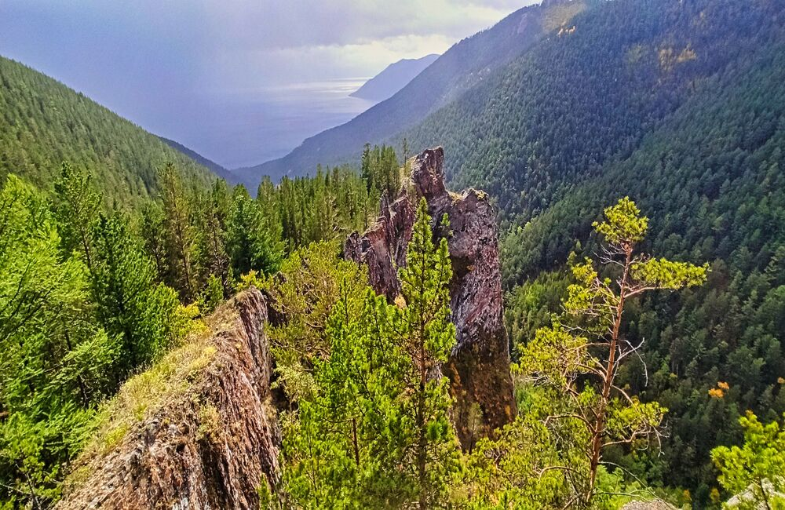
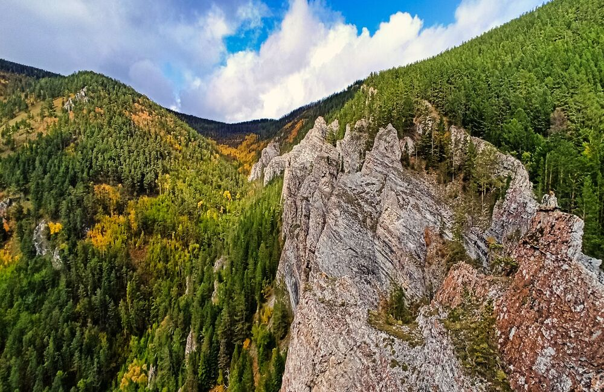
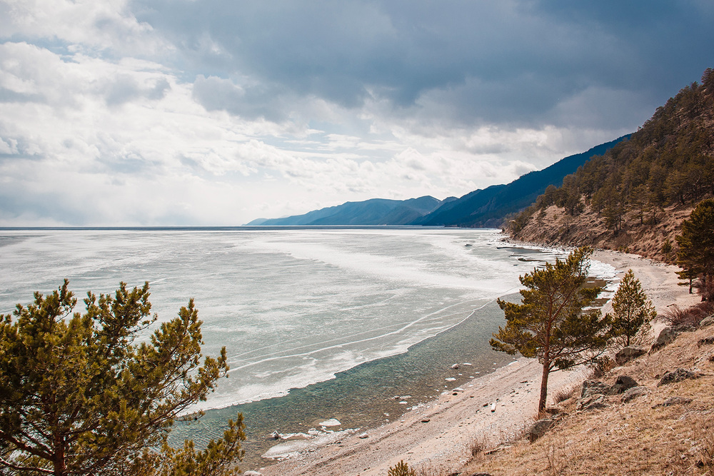

Большое Голоуcное Прибайкалье




Маршрут через живописные леса, горные хребты и тихие берега Байкала. Идеально подходит для пеших походов, фотографирования и экотуризма.
Что можно посетить:
- Мысы Шунтэ и Хобой с потрясающими видами на Байкал
- Редкие лесные озера и ручьи
- Скрытые уголки с уединенными пляжами
- Местные деревни и культурные объекты коренных народов
Длительность маршрута:
2–4 дня пеших походов и активного отдыха, возможность остановки в палаточных лагерях.
Сезон:
Идеально с июня по сентябрь; зимой возможны короткие экскурсии и зимний треккинг с проводником.
Примерная стоимость тура:
- Пешеходный тур — 8 000–12 000 ₽
- Экскурсионный тур — 12 000–18 000 ₽
- Фототур — 15 000–20 000 ₽
Рекомендованные активности:
- Пешие прогулки по лесам и горам
- Фотография природных ландшафтов
- Наблюдение за птицами и животными
- Экологический туризм